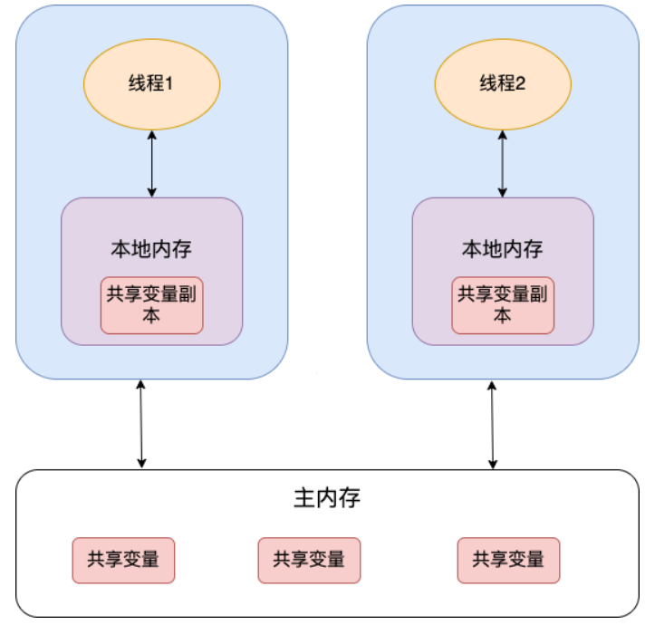

并发-JMM-Java内存模型与happenBefore
CPU 缓存模型
CPU Cache 缓存的是内存数据用于解决 CPU 处理速度和内存不匹配的问题，内存缓存的是硬盘数据用于解决硬盘访问速度过慢的问题。现代的 CPU Cache 通常分为三层，分别叫 L1,L2,L3 Cache。
CPU Cache 的工作方式： 先复制一份数据到 CPU Cache 中，当 CPU 需要用到的时候就可以直接从 CPU Cache 中读取数据，当运算完成后，再将运算得到的数据写回 Main Memory 中。
指令重排序
为了提升执行速度/性能，计算机在执行程序代码的时候，会对指令进行重排序。
常见的指令重排序有下面 2 种情况：
- 编译器优化重排 ：编译器（包括 JVM、JIT 编译器等）在不改变单线程程序语义的前提下，重新安排语句的执行顺序。
- 指令并行重排 ：现代处理器采用了指令级并行技术(Instruction-Level Parallelism，ILP)来将多条指令重叠执行。如果不存在数据依赖性，处理器可以改变语句对应机器指令的执行顺序。
Java 源代码会经历 编译器优化重排 —> 指令并行重排 —> 内存系统重排 的过程，最终才变成操作系统可执行的指令序列。
指令重排序可以保证串行语义一致，但是没有义务保证多线程间的语义也一致 ，所以在多线程下，指令重排序可能会导致一些问题。
内存屏障（Memory Barrier，或有时叫做内存栅栏，Memory Fence）是一种 CPU 指令，用来禁止处理器指令发生重排序（像屏障一样），从而保障指令执行的有序性。另外，为了达到屏障的效果， 它也会使处理器写入、读取值之前，将主内存的值写入高速缓存，清空无效队列，从而保障变量的可见性。
JMM(Java内存模型)
Java 内存模型（JMM） 抽象了线程和主内存之间的关系，就比如说线程之间的共享变量必须存储在主内存中。线程对于变量的读、写都必须在工作内存中进行，而不能直接读、写主内存中的变量。同时，本线程的工作内存的变量也无法被其他线程直接访问，必须通过主内存完成。
- 主内存 ：所有线程创建的实例对象都存放在主内存中，不管该实例对象是成员变量还是方法中的本地变量(也称局部变量)
- 本地内存 ：每个线程都有一个私有的本地内存来存储共享变量的副本，并且，每个线程只能访问自己的本地内存，无法访问其他线程的本地内存。本地内存是 JMM 抽象出来的一个概念，存储了主内存中的共享变量副本。
从上图来看，线程 1 与线程 2 之间如果要进行通信的话，必须要经历下面 2 个步骤：
- 线程 1 把本地内存中修改过的共享变量副本的值同步到主内存中去。
- 线程 2 到主存中读取对应的共享变量的值。

Java内存区域（JVM）与Java内存模型(JMM)的区别
- JVM 内存结构和 Java 虚拟机的运行时区域相关，定义了 JVM 在运行时如何分区存储程序数据，就比如说堆主要用于存放对象实例。
- Java 内存模型和 Java 的并发编程相关，抽象了线程和主内存之间的关系就比如说线程之间的共享变量必须存储在主内存中，规定了从 Java 源代码到 CPU 可执行指令的这个转化过程要遵守哪些和并发相关的原则和规范，其主要目的是为了简化多线程编程，增强程序可移植性的。
happens-before 规定了对共享变量的写操作对其它线程的读操作可见，它是可见性与有序性的一套规则总结，抛开以下 happens-before 规则，JMM 并不能保证一个线程对共享变量的写，对于其它线程对该共享变量的读可见。
线程解锁 m 之前对变量的写，对于接下来对 m 加锁的其它线程对该变量的读可见
synchronized 实现可见性的原理
- 线程加锁时，将清空工作内存中共享变量的值，从而使用共享变量时需要从主内存中重新读取最新的值
- 线程解锁前，必须把共享变量的最新值刷新到主内存中
线程对 volatile 变量的写，对接下来其它线程对该变量的读可见
volatile 实现可见性的原理是内存屏障，Memory Barrier（Memory Fence）
- 对 volatile 变量执行写指令后会加入写屏障，写屏障（sfence）保证在该屏障之前的，对共享变量的改动，都同步到主存当中
- 对 volatile 变量执行读指令前会加入读屏障，而读屏障（lfence）保证在该屏障之后，对共享变量的读取，加载的是主存中最新数据
线程 start 前对变量的写，对该线程开始后对该变量的读可见
新建线程刚开始会从主存中读取数据
1 | static int x; |
线程结束前对变量的写，对其它线程得知它结束后的读可见（比如其它线程调用 t1.isAlive() 或 t1.join()等待它结束）
得知 t1 结束会主动从主存读取数据
1 | static int x; |
线程 t1 打断 t2（interrupt）前对变量的写，对于其他线程得知 t2 被打断后对变量的读可见（通过 t2.interrupted 或 t2.isInterrupted）
1 | static int x; |
对变量默认值（0，false，null）的写，对其它线程对该变量的读可见
具有传递性，如果 x hb-> y 并且 y hb-> z 那么有 x hb-> z ，配合 volatile 的防指令重排，有下面的例子
1 | volatile static int x; |